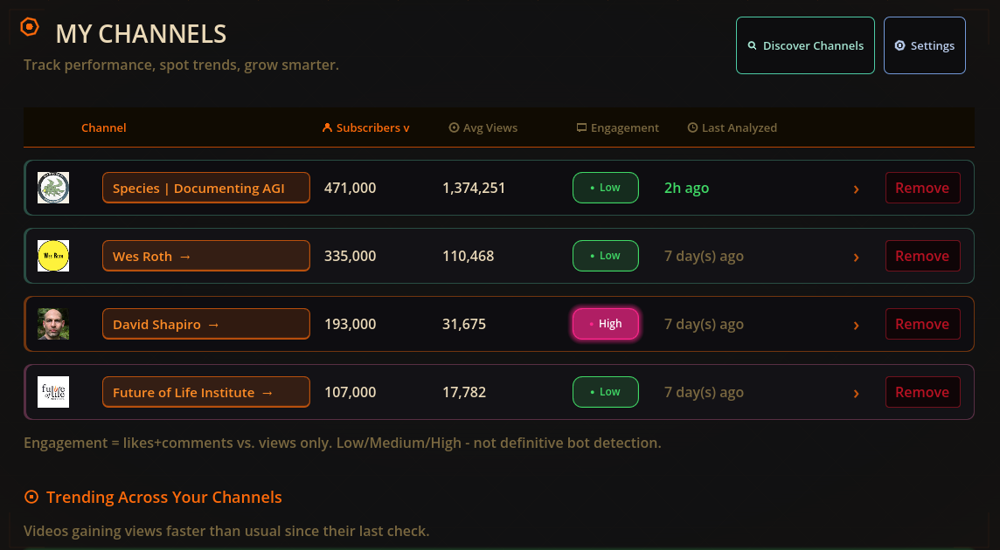
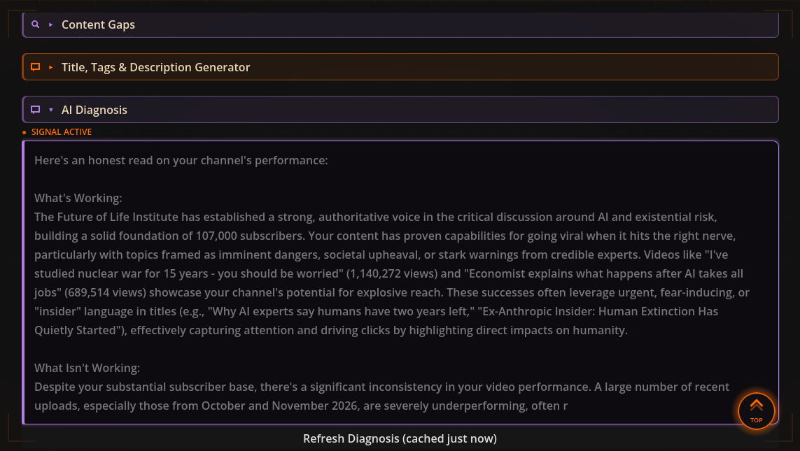
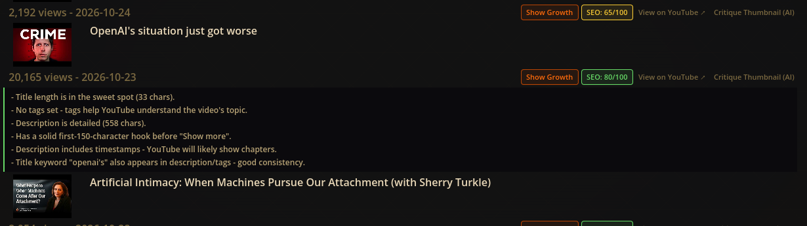

No subscription gets to kill your dream. VIDUVOX is an indie-made Windows YouTube analytics tool for creators who are done renting access to their own channel data. Download it, plug in a free API key you get yourself, and it is yours.
Download the free version | Get the Agency version

Looking for a free VidIQ alternative, a TubeBuddy alternative with no subscription, or a free YouTube SEO tool? VIDUVOX runs on your own PC with your own free API keys. There are no servers and no accounts.


The free version analyzes up to 25 videos per channel and tracks 3 channels. The Agency version is a $19 one-time purchase with up to 200 videos, more tracked channels, AI competitor comparison and AI thumbnail critique. Neither has a subscription.
Is there a free alternative to VidIQ or TubeBuddy? Yes. Bring your own API keys, run it on your own PC, and pay nothing.
Do I need an account? No. Your data stays in a folder on your computer.
What platform? Windows only for now.